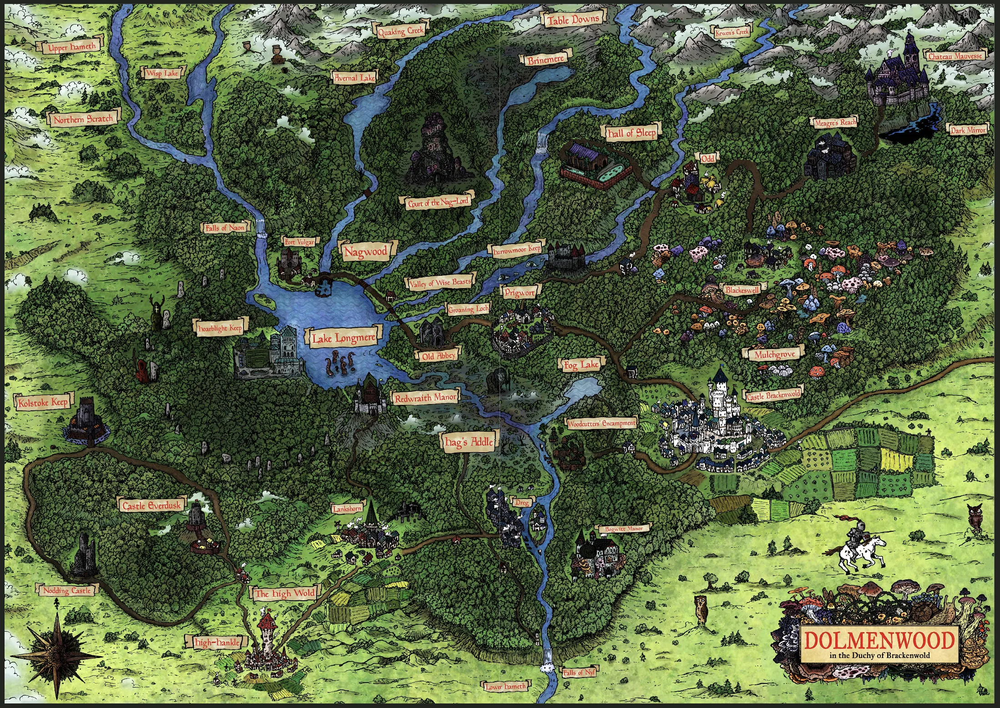

A tangled wood of fungus-choked glades, moss-grown standing stones, and the old cold magic of the Fair Folk. Few who wander in walk the same road out.
A West Marches Chronicle · Old-School Essentials · Dolmenwood

The Duchy of Brackenwold — open the map ❦Beyond the tilled fields of Brackenwold the road gives way to Dolmenwood — a forest older than the Duchy, older than the Church of the One True God whose friars walk its edges. Beneath its black boughs the Nag-Lord's briar-court festers, breggle goat-folk keep to their moss-hung keeps, and the Cold Prince's fairy roads cut through the trees where no map dares mark them. Adventurers come for relics and glory. The wood keeps most of them.
This is the hall-board for our table's expeditions into that wood: a shared West Marches game where the players choose where to go and the wilds decide what it costs. Chart your route below, ready your character, and read how we rule the road before you set out.
The Duchy of Brackenwold charted hex by hex — hamlets, keeps, and the fell places between. A gazetteer of where an expedition might dare.
The CharacterA human enchanter of chaotic bent, his satchel full of runes. His dossier — scores and saves, gear, and the Deathly Blossom he keeps close.
Rules & TableThe Dolmenwood rules reference, this table's house rules, and every link you need to sit down at the board.
ChronicleThe record of expeditions — who went into the wood, what they found, and who came back. The first tale is yet to be told.
The Community ↗Scheduling, rosters, and expedition sign-ups live on the West Marches community page. Muster a party and name your destination.